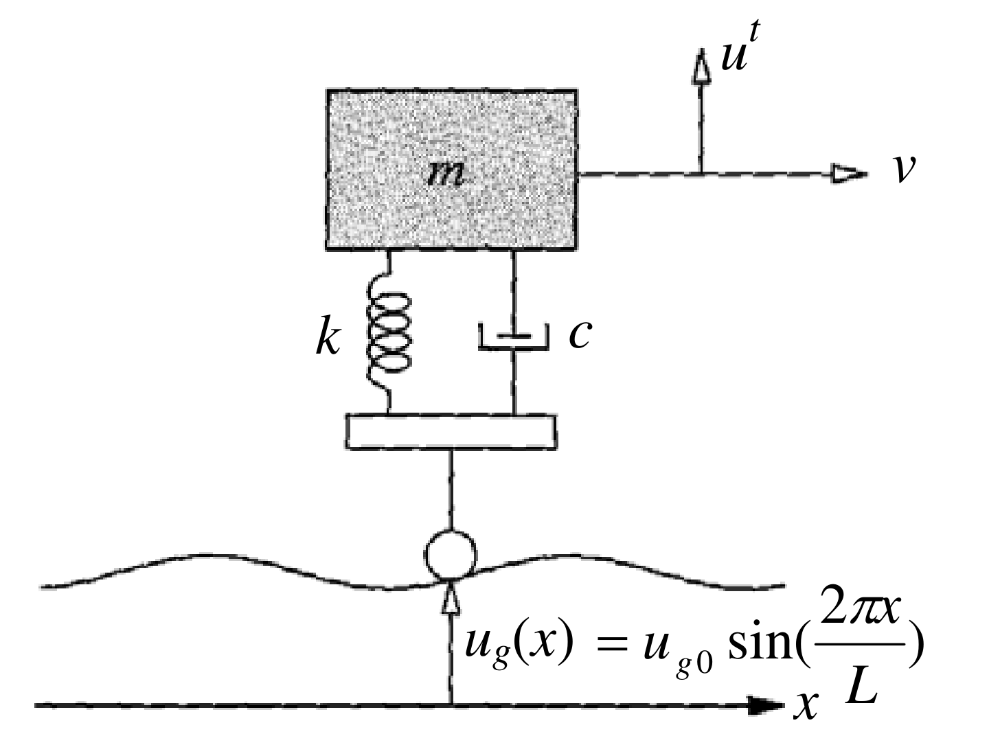
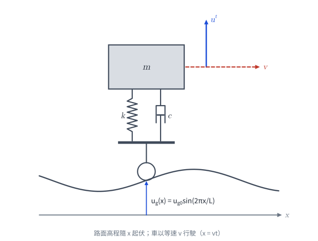
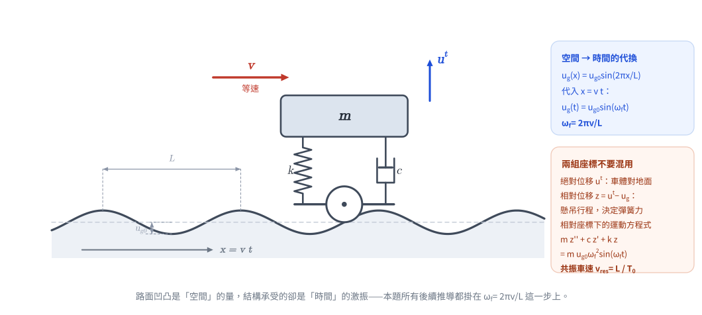
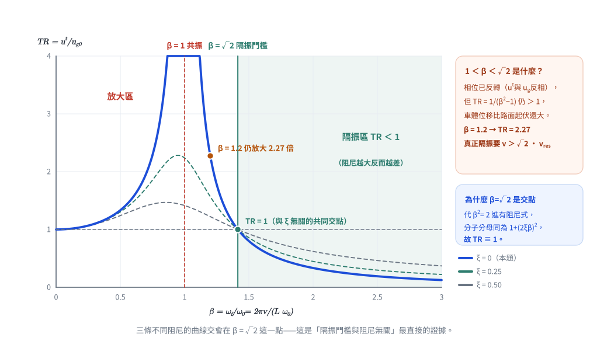

📄 題目正本：考卷原文・附圖・判讀清單（已確認）
SD-2011-2 題目正本
本檔只記錄考卷上寫了什麼、圖上畫了什麼，不含任何解法。解析見同資料夾
SD-2011-2.md。
判讀清單經使用者確認前，狀態為「待確認」；確認後本檔原則上不再修改（改動須回考卷原圖並記 log）。
| 項目 | 內容 |
|---|---|
| 考卷 | raw/exams/SD-2011_結構動力分析與耐震設計.pdf，第 1 頁（正面），第二題 |
| 考年 | 2011（民國100年）專技高考結構工程技師「結構動力分析與耐震設計」 |
| 配分 | 25 分（10／5／10） |
| 附圖 | SD-2011-2-fig-1.png（舊擷取，上方有游標）、SD-2011-2-fig-2.png（2026-11-15 由考卷 500 dpi 重擷取） |
| 判讀狀態 | 已確認（2026-11-15 使用者授權依 Claude 建議確認。原轉錄：2026-11-15 轉錄；PyMuPDF 110 dpi 整頁＋400–500 dpi 局部放大，PDF 文字層核對原文；盲讀於開啟解析前完成） |
1. 考卷原文（逐字）
二、將一輛汽車模擬成單自由度之彈簧-阻尼-質塊系統如下圖所示，若該汽車以 $v$ 等速行駛，道路鋪面的粗糙度為 $u_g(x)=u_{g0}\sin\left(\dfrac{2\pi x}{L}\right)$：
㈠試建立其運動方程式（10 分）
㈡求共振車速。（5 分）
㈢若忽略阻尼，求在非共振車速時之穩態反應（10 分）
2. 考卷給的公式、附表與參數
- 考卷沒有給參考公式或附表；只給路面函數 $u_g(x)=u_{g0}\sin(2\pi x/L)$。
- 給定（符號）：質量 $m$、彈簧 $k$、阻尼 $c$、車速 $v$（等速）、路面振幅 $u_{g0}$、波長 $L$。
- 考卷沒有給：輪胎勁度與質量（圖上車輪以小圓表示）、初始條件。
- 卷首注意事項：㈠可以使用電子計算器。㈡不必抄題，作答時請將試題題號及答案依照順序寫在試卷上，於本試題上作答者，不予計分。㈢本試題之相關符號、公式、物理常數及設計參數未提及時，請依規範自行合理推斷或假設。考試時間：2 小時。
3. 附圖

證據圖 SD-2011-2-fig-2.png（500 dpi 重擷取；舊圖 SD-2011-2-fig-1.png 內容相同，上方有游標）
圖面文字照錄：m、$u^t$、v、k、c、$u_g(x)=u_{g0}\sin(2\pi x/L)$、x
4. 判讀清單
| # | 項目 | 判讀 | 圖上／題文依據 | 把握 |
|---|---|---|---|---|
| 1 | 自由度 | 質塊的垂直總位移 $u^t$（自地面基準量起），向上為正 | 圖上 $u^t$ 箭頭垂直向上，上標 t | 確定 |
| 2 | 支承激振 | 彈簧與阻尼器下端隨路面高程 $u_g$ 上下運動；車輪視為剛性、始終貼地（輪胎勁度不計） | 圖上平板－桿－小圓直接連到路面；考卷沒有給輪胎參數 | 確定（解讀） |
| 3 | 位置與時間 | 等速 $v$ 行駛，$x=vt$（設 $t=0$ 時 $x=0$） | 題文「以 v 等速行駛」；圖上 v 水平箭頭 | 確定（解讀） |
| 4 | 彈簧與阻尼器 | $k$、$c$ 並聯，介於質塊與車輪平板之間 | 圖面 | 確定 |
| 5 | 路面 | $u_g(x)=u_{g0}\sin(2\pi x/L)$，$L$ 為路面波長 | 題文與圖註 | 確定 |
| 6 | ㈢條件 | 忽略阻尼（$c=0$），只求穩態，且車速不等於共振車速 | 題文 | 確定 |
| 7 | 所求 | ㈠運動方程式 ㈡共振車速 ㈢無阻尼、非共振車速之穩態反應（以 $u^t$ 表示） | 題文 | 確定 |
轉錄：2026-11-15（SD-U1-3 題目正本推廣・批 2）
確認：2026-11-15 使用者授權依 Claude 建議確認（SD-U1-3 題目正本推廣・批 2，關卡一）
SD-2011-2｜汽車行駛凹凸路面：SDOF 基礎激振、共振車速與穩態反應
題目資訊
| 欄位 | 內容 |
|---|---|
| 題號 | SD-2011-2 |
| 考年 | 2011（民國100年） |
| 科目分類 | SD-U1-3（單自由度系統之動態分析及應用） |
| 副分類 | SD-U1-2（運動方程式推導） |
| 關鍵詞 | SDOF、基礎激振、路面激振、強迫振動、共振、穩態反應、傳導率、頻率比 |
| verificationStatus | unverified（2026-08-22 修正過內容，待人工重新驗算） |
1. 題目（考卷原文見題目正本）
考卷原文、公式／附表、附圖與判讀清單（已確認）見
SD-2011-2-problem.md。本節只列解題時最容易讀錯的地方與本解使用的記號；題意以題目正本為準。

重繪自考卷附圖，依題目正本判讀清單；本圖攔下的判讀錯誤：u^t 是總位移；激振是彈簧阻尼下端的支承運動，不是作用在質塊上的外力。
常見誤讀
| 項目 | 正確判讀 | 常見誤讀 |
|---|---|---|
| 自由度 | 質塊垂直總位移 $u^t$（判讀 #1） | 相對位移 $u=u^t-u_g$ 當成所求 |
| 激振 | 彈簧、阻尼器下端隨路面高程 $u_g(vt)$ 運動（支承激振；判讀 #2） | 把 $u_g$ 當成作用在質塊上的力 |
| 時間座標 | $x=vt$，激振頻率 $\omega_f=2\pi v/L$（判讀 #3） | 用路面波長直接當週期 |
| ㈢ | 忽略阻尼、只求非共振車速的穩態解 | — |
本解記號： $u'\equiv u^t$ 為質塊絕對垂直位移（沿用題圖 $u^t$）；$\omega_n=\sqrt{k/m}$、$\beta=\omega_f/\omega_n$。
判讀圖解（解析自繪）

圖 1 題目重繪（向量版）。路面凹凸是「空間」的量（波長 $L$），結構承受的卻是「時間」的激振——本題所有後續推導都掛在 $x = vt \Rightarrow \omega_f = 2\pi v/L$ 這一步上。
解題步驟
前置：基礎激振的時間化
車以等速 v 行駛，在時間 t 時車輪位置為 x = vt，故路面引起的基礎位移為：
$$u_g(t) = u_{g0}\sin\!\left(\frac{2\pi v t}{L}\right) = u_{g0}\sin(\omega_f t)$$
其中激振角頻率：
$$\boxed{\omega_f = \frac{2\pi v}{L}}$$
這是本題的核心轉換：車速 v 與路面波長 L 共同決定系統承受的激振頻率。
步驟一：（一）運動方程式
方法一：以絕對位移 u' 表示
車體質量 m 的垂直動力平衡（彈簧和阻尼連接車輪與車體）：
$$m\ddot{u}' + c(\dot{u}' - \dot{u}_g) + k(u' - u_g) = 0$$
整理得：
$$\boxed{m\ddot{u}' + c\dot{u}' + ku' = c\dot{u}_g + ku_g}$$
代入 ug = ug0 sin(ωf t)，u̇g = ug0 ωf cos(ωf t)：
$$m\ddot{u}' + c\dot{u}' + ku' = cu_{g0}\omega_f\cos(\omega_f t) + ku_{g0}\sin(\omega_f t)$$
方法二：以相對位移 z = u' − ug 表示（更便於求解）
令相對位移 $z = u' - u_g$，代入方法一的方程式：
$$m(\ddot{z} + \ddot{u}_g) + c\dot{z} + kz = 0$$
$$\boxed{m\ddot{z} + c\dot{z} + kz = -m\ddot{u}_g}$$
由於 $\ddot{u}_g = -u_{g0}\omega_f^2\sin(\omega_f t)$，右端激振力為：
$$-m\ddot{u}_g = mu_{g0}\omega_f^2\sin(\omega_f t)$$
最終運動方程式（相對位移形式）：
$$\boxed{m\ddot{z} + c\dot{z} + kz = mu_{g0}\omega_f^2\sin(\omega_f t)}$$
物理意義：基礎加速度（路面凹凸的慣性效應）等效於作用在質量上的激振力。
步驟二：（二）共振車速
系統自然角頻率：$\omega_0 = \sqrt{k/m}$
共振條件：激振頻率 = 自然頻率
$$\omega_f = \omega_0 \implies \frac{2\pi v}{L} = \sqrt{\frac{k}{m}}$$
解出共振車速：
$$\boxed{v_{res} = \frac{L}{2\pi}\sqrt{\frac{k}{m}} = L\,f_0 = \frac{L}{T_0}}$$
其中 $T_0 = 2\pi\sqrt{m/k}$ 為系統自然週期，$f_0 = \sqrt{k/m}/(2\pi) = 1/T_0$ 為自然頻率（Hz）。
註（有阻尼時的嚴格共振點）： 本小題與第(三)小題皆按「$\omega_f = \omega_0$」定義共振，這是考場標準答案。
嚴格而言，有阻尼系統的位移振幅峰值出現在 $\omega_f = \omega_0\sqrt{1-2\xi^2}$，
故共振車速略低於 $L f_0$；輕阻尼（$\xi$ 小）時兩者差異可忽略，且 $\xi > 1/\sqrt{2}$ 時位移根本不出現峰值。物理意義： 共振車速 = 路面波長 × 自然頻率。車速愈高或波長愈長，激振頻率愈高，對應不同的共振條件。實際汽車懸吊系統刻意設計較高阻尼（$\xi \approx 0.2\sim0.4$）正是為了壓低通過共振區時的放大（代價見下節第 3 點）。
步驟三：（三）忽略阻尼時的穩態反應（非共振）
令 c = 0，由相對位移運動方程式：
$$m\ddot{z} + kz = mu_{g0}\omega_f^2\sin(\omega_f t)$$
設穩態特解 $z_p = A\sin(\omega_f t)$，代入：
$$-Am\omega_f^2 + kA = mu_{g0}\omega_f^2$$
$$A = \frac{mu_{g0}\omega_f^2}{k - m\omega_f^2} = \frac{u_{g0}\cdot(\omega_f/\omega_0)^2}{1 - (\omega_f/\omega_0)^2}$$
令頻率比 $\beta = \omega_f/\omega_0 = \dfrac{2\pi v}{L\sqrt{k/m}}$：
$$z_p(t) = \frac{u_{g0}\beta^2}{1-\beta^2}\sin(\omega_f t)$$
絕對位移（穩態）：
$$u'_p(t) = z_p(t) + u_g(t) = \left[\frac{u_{g0}\beta^2}{1-\beta^2} + u_{g0}\right]\sin(\omega_f t)$$
$$= u_{g0}\cdot\frac{\beta^2 + (1-\beta^2)}{1-\beta^2}\sin(\omega_f t)$$
$$\boxed{u'_p(t) = \frac{u_{g0}}{1-\beta^2}\sin\!\left(\frac{2\pi v t}{L}\right)}$$
其中：
$$\beta = \frac{\omega_f}{\omega_0} = \frac{2\pi v}{L}\cdot\sqrt{\frac{m}{k}}$$
計算彙整
| 參數 | 表達式 |
|---|---|
| 基礎激振角頻率 | ωf = 2πv/L |
| 系統自然頻率 | ω₀ = √(k/m) |
| 頻率比 | β = ωf/ω₀ = (2πv)/(L√(k/m)) |
| 共振車速 | v_res = (L/2π)√(k/m) = L/T₀ |
| 穩態絕對位移 | u'p(t) = [ug0/(1−β²)] sin(2πvt/L) |
| 穩態相對位移 | zp(t) = [ug0 β²/(1−β²)] sin(2πvt/L) |
解題關鍵觀念
1. 路面激振的時間化（最關鍵步驟）
本題的核心是認識到「空間的路面輪廓」如何轉化為「時間的基礎激振」：
$$u_g(x) = u_{g0}\sin\frac{2\pi x}{L} \xrightarrow{x = vt} u_g(t) = u_{g0}\sin\frac{2\pi v t}{L} = u_{g0}\sin(\omega_f t)$$
激振頻率 ωf = 2πv/L 隨車速 v 線性增大。
2. 基礎激振的等效力
在相對位移座標下：$m\ddot{z} + kz = -m\ddot{u}_g = mu_{g0}\omega_f^2\sin\omega_f t$
激振力振幅 $F_{eff} = mu_{g0}\omega_f^2$ 與頻率平方成正比 → 高速行駛（高 ωf）時，等效激振力更大，更危險。
3. 傳導率（Transmissibility）的特殊情況
無阻尼穩態絕對位移：$u'_p = u_{g0}/(1-\beta^2) \cdot \sin(\omega_f t)$
這正是傳導率（Transmissibility）公式 $TR = 1/|1-\beta^2|$ 的無阻尼特例：
| 頻率比範圍 | 相位 | $TR = 1/\lvert 1-\beta^2\rvert$ | 效果 |
|---|---|---|---|
| $\beta < 1$（低速） | $1-\beta^2 > 0$ → $u^t$ 與 $u_g$ 同相 | $1/(1-\beta^2) > 1$ | 放大（$\beta \to 1$ 時發散＝共振） |
| $1 < \beta < \sqrt2$（中速） | $1-\beta^2 < 0$ → 反相 | $1/(\beta^2-1) > 1$ | 仍是放大（常見誤區） |
| $\beta = \sqrt2$ | 反相 | $= 1$（與 $\xi$ 無關） | 分界點，不放大也不隔振 |
| $\beta > \sqrt2$（高速） | 反相 | $1/(\beta^2-1) < 1$ | 隔振（振動被濾掉） |
⚠ 隔振的門檻是 $\beta > \sqrt2$，不是 $\beta > 1$。 只要 $\beta$ 剛越過 1（例如 $\beta = 1.2$，$TR = 1/0.44 = 2.27$），
車體位移仍比路面起伏放大 2 倍以上，只是相位反了。要真正達到隔振（$TR<1$）必須
$\omega_f > \sqrt2\,\omega_0$，換成車速即
$$v > \sqrt2\,v_{res} = \frac{\sqrt2\,L}{2\pi}\sqrt{\frac{k}{m}}$$
$\beta = \sqrt2$ 是傳導率曲線的共同交點：代 $\beta^2 = 2$ 進有阻尼式
$TR = \sqrt{\dfrac{1+(2\xi\beta)^2}{(1-\beta^2)^2+(2\xi\beta)^2}}$，分子分母同為 $1+(2\xi\beta)^2$，
故不論阻尼比多少 $TR$ 恆等於 1；且在 $\beta > \sqrt2$ 的隔振區內，阻尼越大隔振效果越差。
（此結論與 SD-2009-2、SD-2005-4 的機械隔振題一致。）

圖 2 傳導率 $TR$–$\beta$ 曲線。三條不同阻尼的曲線交會在 $\beta = \sqrt2$ 這一點——隔振門檻與阻尼無關；$\beta = 1.2$ 時 $TR$ 仍有 $2.27$，「超過共振車速就開始隔振」是錯的。
4. 常見陷阱
- ❌ 直接寫 $m\ddot{u}' + k u' = F_0 \sin\omega_f t$（忽略彈簧恢復力基準點在 ug，非靜止位置）
- ❌ 共振車速公式直接寫 $v = \omega_0$（單位不對，應為 $v = L\omega_0/(2\pi)$）
- ❌ 穩態絕對位移忘加 $u_g(t)$（只寫出 $z_p$ 相對位移就停止）
- ❌ 分母 $1 - \beta^2$ 誤寫為 $\sqrt{1-\beta^2}$（有阻尼才有根號）
- ❌ 以為「$\beta > 1$ 就開始隔振」（正確門檻是 $\beta > \sqrt2$，見上表）
- ❌ 「實際汽車懸吊刻意設計較高阻尼（$\xi \approx 0.2\sim0.4$）」的目的是壓低通過共振區（$\beta \approx 1$）時的放大與加快自由振動衰減，代價是高速（$\beta > \sqrt2$）時隔振效果變差——這是懸吊調校的核心取捨，不可只講一半
圖解補繪：2026-08-22（向量圖 2 張，腳本 gen_SD-2011-2.py，所有數值由解題結果算出，可重跑）
修正日期：2026-11-15（§1 改為指向題目正本，重繪附圖 figs/SD-2011-2-fig-1-problem.svg）